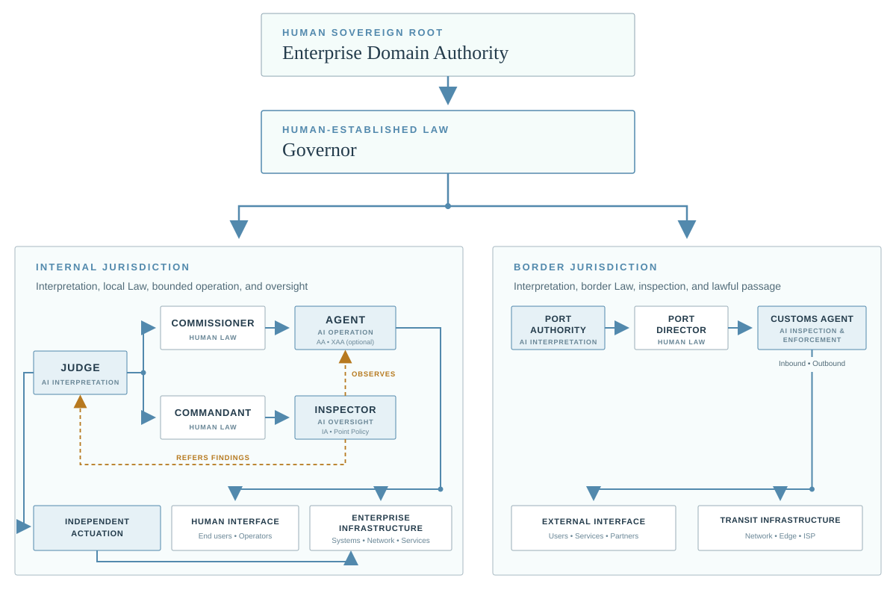

Enterprise Decision Rights
JAZB distinguishes business ownership, Law establishment, architecture, residual-risk acceptance, technical operation, expansion, and independent assurance.

ENTERPRISE GOVERNANCE ARCHITECTURE
JAZB v3.0.0 connects organizational AI governance, risk, lifecycle, trustworthiness, and human oversight with legitimate, bounded machine Authority. Human Law, inspection, judicial decisions, Actuation, evidence, and assurance remain distinct. The optional XAA configuration adds governed consequential autonomy.
GOVERNANCE FUNCTION VIEW
Conceptual view of the institutional Authority and jurisdictional functions. This existing illustration is not an exhaustive diagram of the expanded v3.0.0 enterprise AI management system or its full Core and XAA component inventories. The authoritative specification is the v3.0.0 publication.

SEPARATION BY DESIGN
Under v3.0.0, organizational governance establishes AI purposes, risk boundaries, ownership, lifecycle controls, and human Law. The independent Inspector produces evidence, the Judge evaluates and issues dispositions, and independent Actuation validates and enforces permitted effects. Enterprise AI Customs retains independent Border passage authority. Core Operation keeps consequential business execution with humans; optional XAA Operation adds strictly instrumented, effect-time-checked AI-initiated transactions.
JAZB distinguishes business ownership, Law establishment, architecture, residual-risk acceptance, technical operation, expansion, and independent assurance.
Purpose and permissible autonomy precede Authority. Law, authorization, delegation, operation, reevaluation, revocation, renewal, and retirement remain governed.
Internal Jurisdiction governs enterprise action. Border Jurisdiction governs lawful passage through EDA-registered internal data-domain Ports and the actual external Organizational Boundary. Authority in one does not silently authorize the other.
Interpretive decisions do not become unrestricted technical power. Actuation independently validates applicable active Law, the authorizing chain, effective target, and permitted effect before execution. A valid signature alone does not prove lawful action or technical prevention.
Governance is continuously demonstrated through operation, observation, validation, discovery, remediation, and revalidation as systems and conditions change.
Law, delegation, decisions, passage, actuation, exceptions, and recovery remain traceable to legitimate provenance and reconstructable evidence.
ARCHITECTURAL TRACEABILITY
Material governed Scope should remain traceable from Organizational Purpose through Stakeholder Concerns and Constraints, Governance Decision, Human-Established Law, Bounded Authority, Governed Action, Evidence, Outcome, and Reassessment.
Six complementary architecture views expose different stakeholder concerns while describing one governed architecture.
Purpose, desired outcomes, stakeholders, obligations, dependencies, and constraints.
Who may establish Law, approve autonomy, accept residual risk, expand Scope, and independently assess governance.
Human-Established Law, Rights, Duties, Liberty, delegation, bounded Authority, and provenance.
Internal and Border Jurisdictions, interpretation, Actuation, passage, and actual enforcement paths.
Decision and action evidence, coverage, uncertainty, limitations, and assurance currency.
Establishment, operation, material change, reassessment, recovery, reauthorization, renewal, and retirement.